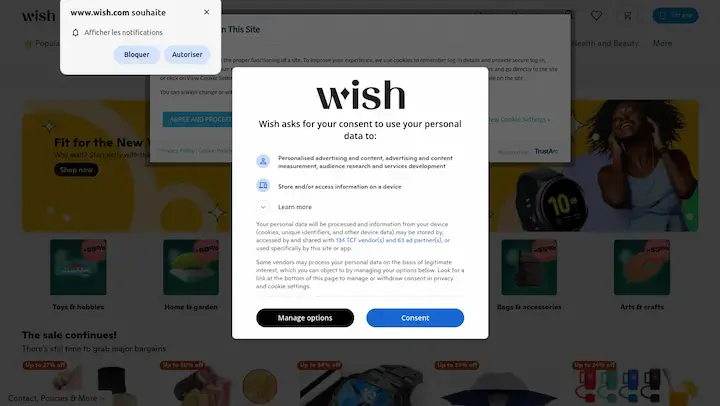
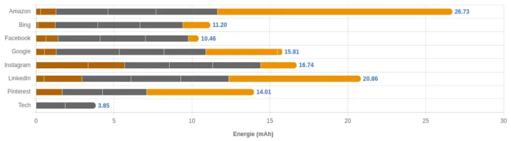
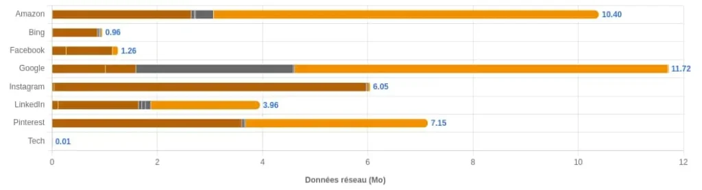
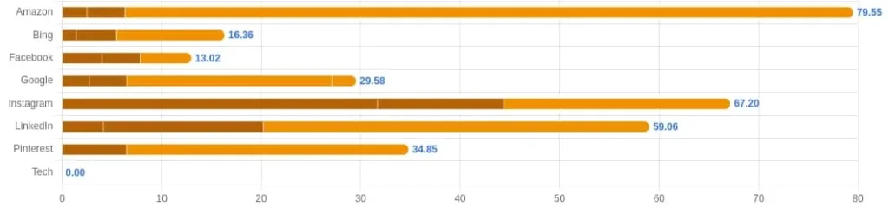
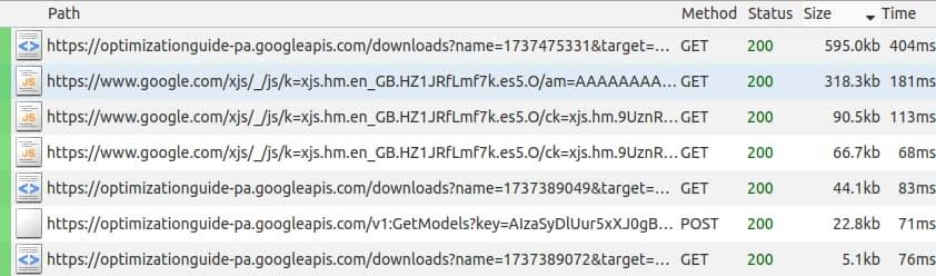

Internet advertising is a wide subject, almost as old as the web itself. The idea here is not to trace its history (other articles do that [FR]), but to provide some context before discussing its environmental impact, particularly through measurements.
Let us begin with an example that we are probably all familiar with in one way or another:

Between choices for notifications, cookies and advertisements, users initially have very little visibility of the page they want to reach. Advertisements often play a role in this, and their impact in terms of data transferred and requests (among other things) is not negligible. It should be noted that this type of display is often even worse on mobile devices.
This means that everyone sees more than 5,000 adverts every day, many of which are digital. This is particularly worrying given that ad blockers will soon be less effective in Chrome and browsers derived from it (source).
The subject of online advertising had already been mentioned in 2015:
- Mozilla estimated that online advertisements accounted for up to 39% of total bandwidth usage (source [PDF 251 KB]).
- The New York Times estimated that the cost of advertisements in terms of loading time was often higher than for the main content (source).
- A paper examines their performance (and their impact on it) (source, PDF 3.6 MB)
In 2018, a scientific publication already examined the environmental impacts of online advertising. The methodology used highlights the complexity of the subject. In addition to the difficulties inherent in assessing the environmental impacts of digital technology, there are several aggravating factors:
- The intensive collection of personal data to provide micro-targeting (tailoring advertisements to internet users)
- Real-Time Bidding, a micro-auction system that determines which advertisement is displayed in a given location for a specific internet user
- The different advertising formats available (we will come back to this later)
- The cost of producing advertising, which is directly linked to the various possible formats
- The behaviours induced (in particular the encouragement of consumption)
As if that was not enough, it is important to keep in mind that the financial cost of these advertisements is astronomical (we are talking about tens of billions of dollars each year), but the revenue generated is much more difficult to estimate. On this subject, I invite you to read Tim Hwang’s book, ‘Subprime Attention Crisis’[FR].
Finally, these adverts are increasingly being misused or used for fraudulent purposes.
We will therefore seek (despite everything) to estimate the sources of overconsumption in online advertising, in order to guide design choices for their distribution.
Online Advertising and Sustainable Digital
Before looking more closely at environmental impacts, let’s consider the perspective of Sustainable Digital.
Advertisements are, of course, affected by accessibility, in order to be understandable and usable by as many people as possible.
Beyond the fraud mentioned above, advertising poses a security risk because users have no control over where clicking on an advertisement will take them.
Regarding personal data, the arrival of the GDPR (General Data Protection Regulation) in May 2018 allowed users to see the impact of trackers and advertisements. The New York Times then decided to remove advertisements without seeing any impact on its revenue (source). This calls into question the online press’s historical attachment to personal data collection and advertising.
The collection and massive use of personal data has also highlighted the risks of leaks of data deemed confidential (source), particularly in Europe [PDF, 5.1 MB]. An extensive report provides more information on the evolution of online advertising in Europe in recent years [PDF, 4.6 MB]. It reveals :
- The increasingly widespread use of online advertising
- The creation of virtual monopolies for Alphabet and Meta
- The ever-increasing collection of personal data to fuel all of this
- A significant lack of transparency
- Increasingly high environmental impacts, among others
- The questioning of the real gains (particularly in terms of reducing environmental impacts) of the latest advances in efficiency and effectiveness
Let us now turn our attention to environmental impacts.
Understanding the environmental impacts of online advertising
These impacts have already been approached, notably via a methodology proposed by SRI [FR, PDF, 326 KB]. This document proposes a framework for taking into account the environmental impacts of advertising campaigns. It is fairly comprehensive, but it is regrettable that, once again, the impacts of digital technology are limited to the transferred data.
In early 2025, ADEME also published an LCA report comparing different advertising channels (online and offline) [FR, PDF, 62.5 MB]. It found that the environmental benefits of digitisation are overestimated and that what we are seeing instead is a transfer and addition of impacts.
Let us begin by examining the main parameters that may influence these impacts:
- The platform on which the advertisement is displayed
- The format of the advertisement
It is not possible for us (at this time) to estimate the impact of micro-auction systems and other intermediaries involved in the selection and display of advertisements.
Which platform should you use to broadcast?
Organisations that use online advertising already have their own criteria for choosing which platform to advertise on. These criteria may include placement cost (programmatic), audience, and platform type. For example, communication strategies differ between social media, e-commerce sites, streaming platforms, and online newspapers. They also target different types of audiences.
After identifying several sources on this subject, we selected eight platforms (ranking). For each one, we chose a URL displaying content so that the result would be representative of human usage. The pages measured are therefore as follows:
* Google : https://www.google.com/search?q=wok
* Facebook : https://www.facebook.com/comandwok/?locale=fr_FR
* Instagram : https://www.instagram.com/mywok_officiel/
* TikTok : https://www.tiktok.com/search?q=greenspector&t=1732865976568
* Linkedin : https://www.linkedin.com/company/greenspector
* Bing : https://www.bing.com/search?q=wok
* Amazon : https://www.amazon.fr/s?k=wok
* Pinterest : https://www.pinterest.com/search/pins/?q=greenspector&rs=typed
It should be noted that half of the platforms selected are social networks. To learn more about the environmental impact of these applications, please refer to this article: /ressources/blog/quelle-empreinte-environnementale-pour-les-applications-reseaux-sociaux-edition-2023/ [FR]
At each of these sites, we measured:
- Page loading
- A pause after loading
- Accepting cookies
- A pause after accepting them
- Scroll to the bottom of the page
- Another pause at the bottom of the page
It proved impossible to take accurate measurements on the TikTok mobile website due to untimely redirects to download the mobile application. We will therefore have to do with the results obtained in the study mentioned in the previous paragraph: it appeared that the TikTok application has the greatest impact on the environment. This is mainly due to the fact that it heavily promotes videos. In this case, the way the app is used means that content is systematically preloaded and launched automatically, which is bad practice from an eco-design perspective.
Let us now compare the sites measured with Greenspector Studio in terms of three metrics: energy, data transferred and display time.
Energy

“Tech” includes the measurement steps that serve as our point of comparison: reference, device with no applications open.
The loading steps are shown in orange.
The scrolling steps are shown in brown.
The pause steps are shown in dark grey.
We can see here that Amazon is the most popular site, followed by LinkedIn, with Facebook having the least impact.
Network data

Here, several findings are surprising at first glance:
- Google is by far the site that uses the most data (followed by Amazon), even though it is still regularly presented as an example of an eco-designed site. We will come back to this later. Conversely, it should be noted that Amazon appeared higher in our article on e-commerce websites because most of the websites featured there had a greater impact.
- Bing is the website with the least impact (no real surprise there), followed by Facebook (which is much more surprising).
Display time

Facebook presents the fastest user journey here. Excluding Amazon for now, Instagram and LinkedIn emerge from these measurements with the longest user journeys.
Detailed analysis
In the case of Google, Greenspector Studio shows many requests on Android mobile devices after all cookies have been accepted.

On Android mobile devices, accepting all cookies for Google in Chrome triggers several requests, some of which are very heavy. The same behaviour is not observed in Chrome on PCs. This is likely due to the Android operating system and its strong links to Google services.
More generally, the google.com search engine home page is still regularly presented as an eco-designed page. This should not be the case. Beyond the additional requests mentioned above, the proliferation of features (particularly those related to artificial intelligence) calls this into question. This also highlights the fact that the apparent lightness of a page must be verified by a measurement that is as comprehensive as possible and ideally correlated with the environmental commitments of the organisation providing the page in question.
Amazon
Over the years, it has become a well-known example of what not to do in terms of eco-design, particularly in terms of user experience and visual simplicity.
This social network appears to be a good performer here, if we stick to the measurements.
When browsing the site under the measurement conditions, we discover the explanation: browsing the site is constantly blocked by intrusive pop-ups, particularly those asking the user to log in. As a result, the areas displayed are very limited. For this type of situation (and taking into account the case of TikTok mentioned above), it might be interesting to measure social networks manually. This would make it easy to eliminate pop-ups as they appear. However, in real-world conditions, this type of experience tends to motivate users to create an account and/or install the mobile application (which is probably the intended goal).
Facebook therefore appears to have less of an environmental impact on the measured journey. However, keep in mind that this is achieved at the expense of user experience.
Interim conclusion
If we keep in mind all the subtleties associated with each platform and measurement conditions, Bing appears to be the least impactful website for advertisers. The advertising container is very important here, as the advertiser’s impact is of course closely linked to the sites on which they advertise. Responsibility for the impact is not limited to the advertising format alone.
How the ad is presented
Beyond where your adverts are displayed, the choice of format can have a significant impact. For example, the Semrush website lists 26 types of adverts, including:
* Image
* Video
* Animation
* Rotation (horizontal scrolling of different advertisements)
Most of these are already measured in our article on the impact of page elements.
Although content and format influence the result, the possible variations can be classified as follows, from least to most impactful in terms of environmental impact:
- Optimized image
- Raw image
- Low-definition video
- High-definition video
- Animation/rotation
In order to ensure that we reduce our impact, we have already published an article on editorial restraint [FR], from which you can easily take some recommendations.
Results of a dedicated study
Measurements had previously been carried out by Greenspector for SEPM (French magazine publishers union). To do this, different formats were compared based on IAB (Interactive Advertising Bureau) standards: 300×600, billboards, different banner formats, etc. Several types of content were measured:
- Static (image and text)
- Animation
- Carousel
- Video
Network data
The general trend observed is quite logical.
The volume of data transferred increases significantly with the size (total, in pixels) of the advertisement.
In terms of data transferred, media types can be ranked from least impactful to most impactful:
- Static
- Animation
- Carousel
- Video
Energy
Regarding battery discharge, the conclusions are more mixed.
In terms of battery discharge when loading advertisements and scrolling, the least impactful to the most impactful are:
- Static
- Carousel
- Animation
- Video
When the user is inactive (pause), we have from least impactful to most impactful:
- Static
- Carousel
- Video
- Animation
It is interesting to note the orders of scale. For static images and carousels, the discharge speed is very similar. For video, the discharge speed is ten times higher. For carousels, it is around twice that of video. This period of inactivity is essential, as it corresponds to a user reading the content of the page on which the advertisement is located.
Here we see the same trend as mentioned above.
To go further
To go beyond simple content optimisation, the nature of the content is also important, as is the behaviour encouraged among internet users and potential customers. The risks of overconsumption are high and product quality can vary. In addition, some advertisements use deceptive mechanisms through what is known as persuasive design. For more information on this subject, please refer to the guide provided by Designers Ethiques (Ethical Designers).
Here are some additional resources:
- Make Better Ads by WeTransfer
- I stopped advertising everywhere and nothing happened
- Life cycle analysis for advertising
- Reducing the environmental impact of online advertising through artificial intelligence
- Global Media Sustainability Framework: a global benchmark for reducing the environmental impact of advertising campaigns
Conclusion
The complexity of online advertising is quite striking.
There are numerous possibilities in terms of both content types and platforms on which to distribute them. The environmental impact of the auction systems that govern this is currently unknown. The same is true for data exchanges related to data collection, particularly tracking.
As awareness of these impacts emerges, tools and standards are appearing to remedy them, most often through technical optimisation approaches. Solutions exist and can effectively contribute to reducing environmental impacts.
However, the subject of online advertising should be considered holistically: security issues, accessibility, captology (avoiding mechanisms designed to manipulate internet users) and, more generally, what we are trying to sell and how.
While technical choices are an important first step, a more comprehensive awareness is essential in order to make informed choices in the long term. In particular, we might question the relevance of eco-designing an advertisement for, say, combustion engine cars.